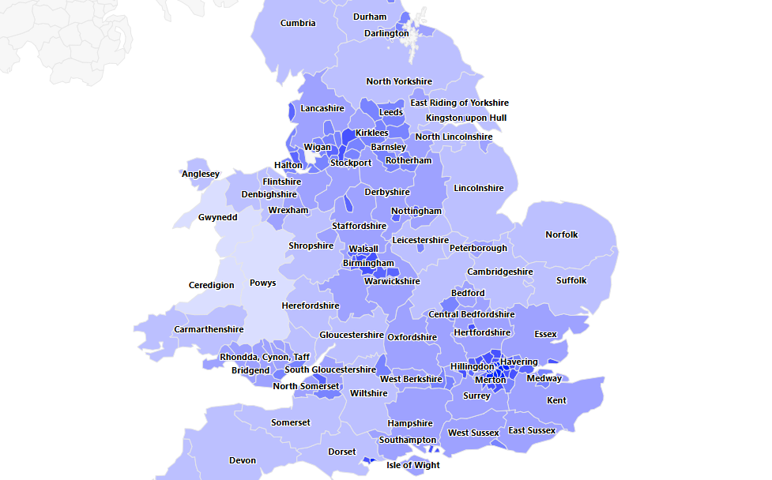
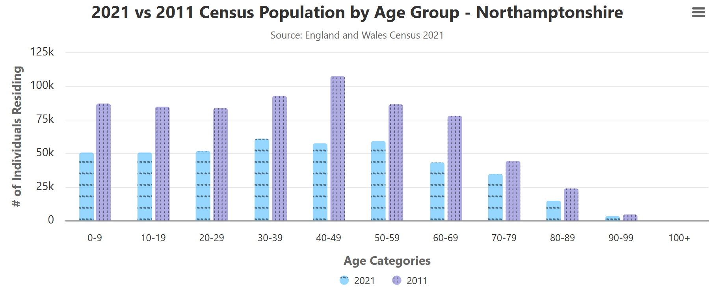
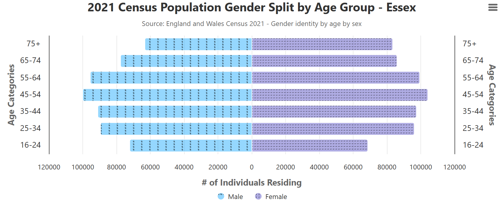
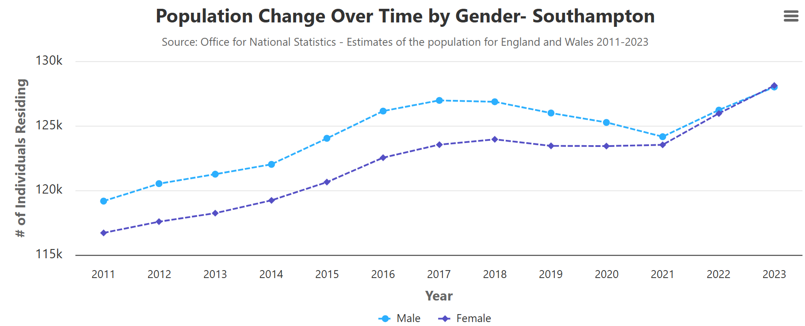

Dataset 1- Choropleth Map (Click for link to dataset)
The dataset used in the creation of the choropleth map was a dataset titled: England and Wales Census 2021 - TS007: Age by single year. This dataset contained 100 records for each region within England and Wales. Each record listed a numerical age from 0 to 100, along with an observation for each, effectively conveying the number of people recorded at each specific age. The data was gathered from the 2021 England and Wales census and thus was complete with no records missing, however was initially provided in a format inadequate for analysis. Consequently, the file was converted to JSON for more efficient processing of data.
Dataset 2- Vertical Bar Chart (2021 Data), (2011 Data)
The second chart utilises multiple datasets to compare population totals between 2011 and 2021 for different age groups. The dataset for the 2021 data was gathered from the 2021 England and Wales Census 2021, whereas the 2011 data was gathered from the previous 2011 census. Because two datasets were being used 10 years apart, there were likely going to be the inconsistencies between the two. Thankfully both datasets were published by the Office for National Statistics and therefore the format and regions of the datasets were identical, however, some of the region names were different. Because there were a significant number of records for each dataset, re-naming the records to ensure conformity was a lengthy process however once this was performed, the data was compatible and uniform.
Dataset 3- Horizontal Bar Chart (Click for link to dataset)
The dataset used in the creation of the horizontal bar chart was a dataset titled: England and Wales Census 2021 - RM163: Gender identity by age by sex. This dataset contains data for 7 age categories seen on the chart, along with observation counts for populations of male and female respondents for each region. Like the first dataset, data was gathered during the 2021 England and Wales census and thus was complete with no records missing, however a notable difference was that despite being from the same source as the previous chart, the age categories predefined into 7 categories were different to the previous chart. Initial worries were that these categories forming the Y axis would cause confusion, however following implementation, the data was deemed different enough to the vertical bar chart not to matter.
Dataset 4- Line Chart (Click for link to dataset)
The final dataset used in the creation of the visualisation was to generate the line graph of population over time from 2011 to 2023. Unlike the other charts, the data source was not census data, however was still recorded and published by the Office for National Statistics. The dataset was not immediately fit for purpose, as the data was split into region, gender, and counted each individual age from 0-100 seen in earlier discussed datasets. Due to aims of showing an overall population count per region and per gender, age was manipulated out of the data by summing the observation counts into one record for male and one record for female for each region before formulating the line chart. Unfortunately, this dataset featured 60,000 records and upon transposition into JSON format, over 100,000, meaning that time efficient data manipulation was imperative to achieving a usable visualisation that didn't take too long to calculate.